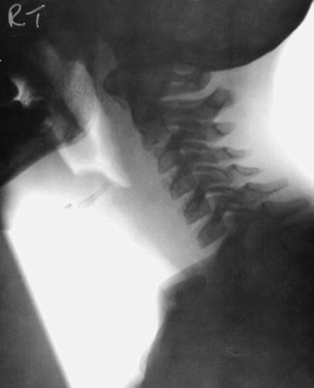
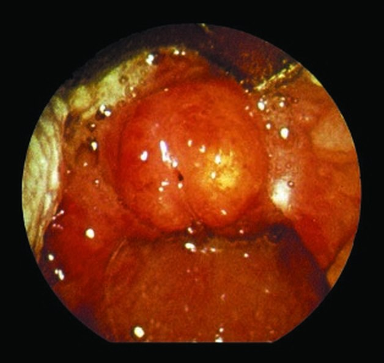

Сверка с PDF рубрикатора выполняется…
Круп, эпиглоттит, постинтубационный отёк гортани
Клинические рекомендации от 14.01.2025 · взрослые и дети
Основные положения
- Круп (острый обструктивный ларингит): воспаление гортани и подскладочного пространства с сужением просвета, как правило вирусной природы; болеют преимущественно дети от 6 месяцев до 6 лет. Эпиглоттит: острое бактериальное воспаление надгортанника (Haemophilus influenzae типа b), может быстро привести к асфиксии.
- Лечение крупа:
- всем пациентам: кортикостероиды (дексаметазонoff-label однократно или будесонид ингаляционно);
- антибиотики и паровые ингаляции не рекомендуются;
- тяжёлый круп: ингаляция эпинефринаoff-label;
- сатурация 92% и ниже: оксигенотерапия;
- стеноз IV степени: интубация трахеи.
- Эпиглоттит:
- экстренная госпитализация в отделение с возможностью интубации;
- положение только сидя;
- ранняя интубация трахеи;
- антибиотик внутривенно всем пациентам;
- ротоглотку осматривают только в операционной в готовности к интубации;
- ингаляции, седативные средства и беспокойство ребёнка противопоказаны.
- Постэкстубационный отёк гортани:
- системные глюкокортикоиды внутривенно не менее 48 часов;
- нет улучшения в течение часа: реинтубация без прерывания лечения.
- Госпитализация при крупе:
- стеноз гортани II–III степени;
- невозможность адекватного лечения дома;
- прогрессирующее ухудшение.
Клиническая картина и классификация
Определения
- острый обструктивный ларингит (круп): воспаление гортани и тканей подскладочного пространства с сужением просвета гортани; прежние названия — «стенозирующий ларинготрахеит», «ложный круп»;
- эпиглоттит: остро возникшее бактериальное воспаление надгортанника и окружающих тканей, может быстро привести к жизнеугрожающему нарушению проходимости дыхательных путей.
Этиология
Круп: наиболее частые возбудители — респираторные вирусы, причём до 80% случаев обусловлено вирусом парагриппа. Среди прочих возбудителей встречаются вирусы гриппа A и B, аденовирусы, респираторно-синцитиальный вирус, риновирусы и другие. В крайне редких случаях причиной бывают бактерии, например Mycoplasma pneumoniae.
Постинтубационный отёк гортани: причиной является эндотрахеальная интубация, при которой нередко возникает поражение гортани от давления эндотрахеальной трубки. Оно проявляется отёком разной степени, изъязвлениями, грануляциями и ограничением подвижности голосовых складок, что приводит к сужению просвета в первые 24 часа после экстубации. У половины пациентов отёк требует реинтубации.
В подавляющем большинстве случаев возбудителем является Haemophilus influenzae типа b (более 90%). В странах с массовой иммунизацией против гемофильной инфекции у вакцинированных детей эпиглоттит встречается редко и может быть вызван другими возбудителями, а эпиглоттит, обусловленный этим возбудителем, чаще встречается у взрослых. В редких случаях его вызывают пневмококк, стрептококки групп A и C, золотистый стафилококк, Moraxella catarrhalis и другие.
Степени стеноза гортани
Степени стеноза гортани по В. Ф. Ундрицу (1969) таблица 1 в тексте КР
| Степень | Клинические проявления |
|---|---|
| I (стадия компенсации) | Осиплость, грубый навязчивый кашель, умеренная одышка |
| II (стадия неполной компенсации) | Осиплость, грубый навязчивый кашель, выраженная одышка, возбуждение, дыхание с участием вспомогательной мускулатуры, втяжение податливых мест грудной клетки, раздувание крыльев носа, цианоз носогубного треугольника, тахикардия |
| III (стадия декомпенсации) | Осиплость, грубый навязчивый кашель, беспокойство, страх, возможна апатия, резкая одышка с выраженным втяжением податливых мест грудной клетки, бледность, акроцианоз |
| IV (терминальная стадия, асфиксия) | Сознание отсутствует, резкая бледность и цианоз, гипотермия, возможны судороги, мидриаз, частое поверхностное дыхание, артериальная гипотензия, нитевидный пульс; предшествует остановке дыхания и сердца |
Шкала тяжести крупа Westley приложение Г1 КР
| Признак | Баллы |
|---|---|
| Стридор | отсутствует: 0 при возбуждении: 1 в покое: 2 |
| Втяжение уступчивых мест грудной клетки | отсутствует: 0 лёгкое: 1 умеренно выраженное: 2 резко выраженное: 3 |
| Проходимость дыхательных путей | нормальная: 0 нарушена умеренно: 1 значительно снижена: 2 |
| Цианоз | отсутствует: 0 при двигательной активности: 4 в покое: 5 |
| Сознание | без изменений: 0 нарушения сознания: 5 |
- лёгкий круп: 2 и менее;
- среднетяжёлый: 3–7;
- тяжёлый: 8 и более;
- угроза остановки дыхания: 12 и более.
За рубежом используют также классификацию по степени тяжести: лёгкий, среднетяжёлый, тяжёлый и терминальный круп по лающему кашлю, стридору, втяжению межрёберий, возбуждению или сонливости и цианозу.
Клиническая картина
Круп
Начало- признаки ОРВИ: ринорея, першение в горле, кашель;
- чаще невысокая температура;
- перед развитием стеноза возникают осиплость и (или) сухой грубый кашель, затем лающий кашель и шумный вдох (стридор);
- симптомы, как правило, появляются вечером, ночью или под утро.
При стенозе I степени стридор в покое отсутствует и возникает при беспокойстве или нагрузке; при II степени стридор слышен и в покое. Стеноз III степени требует экстренной помощи.
Более 2/3 обращаются со стенозом I степени, тяжёлый стеноз — менее чем у 1% детей; симптомы обычно купируются за 48 часов.
Постинтубационный отёк гортани: отёк начинается вскоре после интубации, а симптомы появляются после удаления трубки. Большинство пациентов предъявляют жалобы на лёгкие симптомы: боль в горле, дисфонию, затруднение глотания.
Появление стридора свидетельствует о клинически значимой обструкции верхних дыхательных путей; стридор и дыхательная недостаточность возникают при обструкции более половины просвета.
Клиническая картина может проявиться в первые минуты и часы после экстубации, однако описаны случаи отёка, потребовавшего реинтубации спустя 48–72 часа. В среднем симптомы купируются через 72 часа, у большинства пациентов спонтанно за 24–48 часов.
Безопасного верхнего предела длительности интубации у детей нет.
Эпиглоттит: тяжёлая бактериальная инфекция.
- острое начало с высокой температуры и нарушения общего состояния;
- боль в горле, тризм, слюнотечение, поза «треножника», приоткрытый рот;
- быстро нарастающий стридор, западение надгортанника в положении на спине;
- типичного для крупа лающего кашля нет.
В учебнике: заболевания гортани. Анатомия и физиология: гортань.
Диагностика
- круп: диагноз клинический, как правило устанавливается на основании анамнеза и симптомов — осиплости голоса, лающего кашля, инспираторного стридора;
- эпиглоттит: острое начало с высокой температуры и нарушения общего состояния; боль в горле, тризм, слюнотечение, поза «треножника», приоткрытый рот; быстрое развитие стридора, западение надгортанника в положении на спине; лающего кашля нет;
- постинтубационный отёк: боль в горле, дисфония, затруднение глотания, стридор после экстубации; инструментально — УЗИ гортани у интубированных, у взрослых также тест на герметичность манжеты.
Ротоглотку ребёнка с подозрением на эпиглоттит осматривают только в операционной в полной готовности к интубации: высок риск рефлекторного спазма гортани и асфиксии.
При крупе и эпиглоттите уточняют вакцинацию против гемофильной, пневмококковой инфекции и дифтерии.
Осмотр и аускультация
- цианоз;
- участие вспомогательной мускулатуры;
- втяжение яремной ямки и межрёберных промежутков;
- частота дыхания;
- сатурация.
Аускультативно уточняют характер одышки: при крупе она инспираторная, а экспираторной или смешанной становится при сопутствующей бронхиальной обструкции или тяжёлом крупе.
Пульсоксиметрия
- круп и эпиглоттит: оценка дыхательной недостаточности, необходимости кислорода, динамики.
Общий анализ крови и С-реактивный белок
- круп: только при высокой лихорадке, когда нужно исключить бактериальную инфекцию; в стационаре общий анализ крови всем, СРБ по необходимости.
- подозрение на эпиглоттит, высокая лихорадка: развёрнутый общий анализ крови, при необходимости СРБ.
Для эпиглоттита характерны лейкоцитоз более 15×10⁹/л и повышенный СРБ. Анализы берут, только когда это безопасно, иногда лишь после интубации.
Посев с надгортанника и посев крови
- эпиглоттит, селективно: этиологическая диагностика с определением чувствительности.
Берут после восстановления проходимости дыхательных путей; посев с надгортанника у неинтубированного пациента противопоказан.
Рентгенография мягких тканей шеи
При крупе рутинно не проводят: неспецифична и малоинформативна.
- сомнительные случаи эпиглоттита со стёртой симптоматикой: боковая проекция.
- отёк надгортанника — симптом «большого пальца».
Любое исследование при подозрении на эпиглоттит может спровоцировать обструкцию дыхательных путей.
Острый эпиглоттит

УЗИ гортани и фиброларингоскопия перед экстубацией
- интубированные взрослые и дети, селективно: проходимость верхних дыхательных путей перед экстубацией.
Измеряют ширину воздушного столба на уровне складок до и после сдувания манжеты; её уменьшение предсказывает постэкстубационный стридор, точность метода окончательно не установлена.
Фиброларингоскопия перед экстубацией при наличии ресурсов — пациентам с факторами риска, прежде всего после трудной интубации или со стридором и дисфонией через 48–72 часа. Подсвязочное пространство не видно, а стенозы обычно подсвязочные.
- взрослые перед экстубацией: тест на герметичность манжеты (утечка воздуха при сдутой манжете).
У детей прогностическая ценность низкая, широко не применяется.
Дифференциальная диагностика
Круп и эпиглоттит дифференцируют между собой и с другими причинами обструкции верхних дыхательных путей. Эпиглоттиту не свойственны катаральные явления, кашель и осиплость. Уточняют атопию, эпизоды бронхообструкции или стеноза, признаки гастроэзофагеального рефлюкса.
Острый эпиглоттит, эндоскопическая картина

Круп и эпиглоттит: клинические различия приложение А3.2, таблица 2 КР
| Признак | Круп | Эпиглоттит |
|---|---|---|
| Возраст | 6 месяцев – 3 года | старше 3 лет |
| Развитие стридора | постепенное (24–72 ч) | быстрое (8–12 ч) |
| Симптомы | катаральный продром, грубый лающий кашель, осиплость, грубый инспираторный стридор, редко шум на выдохе; боли в горле нет или умеренная | умеренный ринит, несильный кашель, приглушённый, но не осиплый голос, умеренный стридор, усиливается лёжа на спине, низкий звук на выдохе; боль в горле; «опасные» признаки: гиперсаливация, тризм |
| Лихорадка и интоксикация | чаще субфебрилитет, интоксикации нет | температура выше 39 °C, выраженная интоксикация и недомогание |
| Рентгенография | сужение дыхательных путей | отёк надгортанника, симптом «большого пальца» |
Дифференциальная диагностика крупа с клинически сходными состояниями приложение А3.2, таблица 1 КР
| Заболевание | Наиболее частый возраст | Клинические проявления | Лабораторная и инструментальная диагностика |
|---|---|---|---|
| Круп | 6 месяцев – 6 лет | острое начало, «лающий» кашель, стридор, осиплость голоса | не требуется |
| Паратонзиллярный абсцесс | 6 месяцев – 3,5 года | боль в горле, лихорадка, гнусавый голос, речь по типу «картошка во рту»; смещение миндалины вниз и медиально, отклонение нёбного язычка, гиперемия и (или) налёт на миндалинах, возможен тризм | рентгенография мягких тканей шеи, КТ шеи, клинический анализ крови (лейкоцитоз) |
| Заглоточный (ретрофарингеальный) абсцесс | 2–4 года | лихорадка, слюнотечение, дисфагия, боль при глотании, боль в шее; возможны тризм, отёк шеи, вынужденное положение: голова запрокинута назад и повёрнута в сторону абсцесса | рентгенография мягких тканей шеи, КТ шеи с внутривенным болюсным контрастированием, клинический анализ крови (лейкоцитоз) |
| Ангиоотёк | в любом возрасте | отёк шеи и, возможно, лица, другие признаки аллергической (в том числе анафилактической) реакции; возникает после контакта с аллергеном или токсическим веществом | в дальнейшем аллергологическое обследование: кожные тесты или специфические иммуноглобулины E |
| Аспирация инородного тела | чаще до 3 лет | эпизод «поперхивания», острое затруднение дыхания, слюнотечение | рентгенография мягких тканей шеи, КТ шеи, трахеобронхоскопия |
| Химический и термический ожог верхних дыхательных путей | в любом возрасте | контакт с химическими веществами, тепловое воздействие | прямая ларингоскопия |
| Эпиглоттит | 3–12 лет | острое нарушение глотания, боль при глотании, слюнотечение, высокая лихорадка, беспокойство, приглушённый голос | рентгенография мягких тканей шеи (утолщённый надгортанный хрящ), клинический анализ крови (лейкоцитоз) |
| Дифтерийный (истинный) круп | в любом возрасте | развивается медленнее, на фоне субфебрильной температуры (кроме токсической формы) и интоксикации; боль в шее и её отёк; налёты на миндалинах грязно-серого цвета, трудно отделяющиеся | посев на Corynebacterium diphtheriae, молекулярно-биологическое исследование мазков со слизистой оболочки ротоглотки на возбудителя дифтерии, определение антител к дифтерийному токсину |
| Бактериальный трахеит | до 6 лет | высокая лихорадка, «лающий» кашель, нарастающие симптомы дыхательной недостаточности | клинический анализ крови (лейкоцитоз), рентгенография мягких тканей шеи (сужение просвета трахеи) |
| Гемангиома | до 6 месяцев | усиление стридора на фоне беспокойства | трахеобронхоскопия |
| Аномалии верхних дыхательных путей: трахеомаляция, ларингомаляция, расщелина гортани, стеноз подсвязочного пространства | с первых 6 месяцев жизни до 4,5 года | рецидивирующие эпизоды «лающего» кашля и стридора | трахеобронхоскопия |
| Новообразования | в любом возрасте | нарастающие изменения дыхания и голоса | рентгенография мягких тканей шеи в боковой проекции, КТ шеи |
| Увулит | в любом возрасте | отёк и эритема нёбного язычка; этиология бактериальная или аллергическая; может сопутствовать эпиглоттиту | при аллергической этиологии — в дальнейшем аллергологическое обследование |
При некоторых болезнях гортани (врождённый стридор, подскладочная гемангиома или неоплазия, парезы, ларингомаляция) затруднение вдоха усиливается во время острой респираторной инфекции и имитирует острый стеноз.
- ларингоспазмом;
- ангионевротическим отёком, анафилаксией;
- инородным телом дыхательных путей;
- послеоперационной гематомой со сдавлением дыхательных путей;
- парезом голосовых складок после операций на шее;
- апноэ сна.
Лечение
Круп
Антибиотики при крупе не назначают: неэффективны.
Всем пациентам с крупом: ингаляционный будесонид и (или) системные кортикостероиды (дексаметазонoff-label, преднизолонoff-label).
Обычно достаточно однократного введения; детям старше 3 лет предпочтителен приём внутрь, он так же эффективен, как парентеральный. Повторное введение, как правило, не нужно.
- дексаметазонoff-label: 0,15–0,6 мг/кг внутримышечно или внутривенно при любой степени стеноза; внутрь предпочтительно 0,15 мг/кг;
- нет дексаметазона: преднизолонoff-label в эквивалентной дозе (1 или 2 мг/кг соответствуют 0,15 и 0,6 мг/кг дексаметазона); после преднизолона выше риск повторных симптомов.
- будесонид, суспензия через компрессорный или мэш-небулайзер: 2 мг в сутки однократно или по 1 мг дважды с интервалом 30 минут;
- в 85% случаев (обычно при стенозе I степени) достаточно одной ингаляции; при необходимости ингаляции повторяют согласно инструкции.
Системные кортикостероиды, по ряду данных, эффективнее ингаляционных: беспокойство ребёнка мешает ингаляции.
Будесонид к дексаметазонуoff-label рутинно не добавляют: дополнительного эффекта нет.
- тяжёлый круп или нет кортикостероидов: ингаляция эпинефринаoff-label.
- раствор 1:1000, 5 мл на ингаляцию независимо от возраста и массы.
Эффект быстрый, но нестойкий (не более 2 часов): в монотерапии не применяют. У детей препарат применяют вне инструкции, по решению врачебной комиссии с информированным согласием.
Исследований о необходимости и эффективности повторных ингаляций эпинефринаoff-label не проводилось. Есть данные об эффективности более низких доз (ниже 0,5 мг/кг).
- круп гриппозной этиологии: ингибиторы нейраминидазы — осельтамивир с 1 года, занамивир с 5 лет.
Других этиотропных средств против вирусов крупа нет.
Паровые ингаляции не рекомендуются: эффективность низкая.
При сатурации 92% и ниже показана оксигенотерапия.
При стенозе гортани IV степени необходима неотложная интубация трахеи, при III степени её целесообразность рассматривают.
- у детей допустимы только парацетамол или ибупрофен;
- здоровым детям от 3 месяцев: при температуре выше 39–39,5 °C;
- при лихорадке 38–38,5 °C: детям до 3 месяцев, пациентам с хронической патологией, а также при дискомфорте, связанном с температурой.
Регулярный (курсовой) приём жаропонижающих нежелателен: повторную дозу вводят только после нового повышения температуры. Чередование парацетамола и ибупрофена или их комбинация не усиливает эффект. Ацетилсалициловую кислоту и нимесулид у детей с жаропонижающей целью не применяют; метамизол натрия крайне нежелателен из-за риска агранулоцитоза.
Эпиглоттит
Пациента не укладывают: только сидя, в том числе при транспортировке.
Ранняя интубация трахеи для профилактики внезапной асфиксии. Экстубация безопасна после нормализации температуры, прояснения сознания и стихания симптомов, обычно через 24–48 часов. В редких нетяжёлых случаях интубация может не понадобиться.
Ингаляции, снотворные и седативные средства категорически не рекомендуются; беспокойство пациента не провоцируют, поскольку высок риск рефлекторного ларингоспазма.
Всем пациентам с эпиглоттитом: системный антибиотик внутривенно.
Препараты и дозы- цефотаксим по инструкции или цефтриаксон: дети от 15 дней до 12 лет 20–80 мг/кг в сутки, оптимально 75 мг/кг в сутки; масса более 50 кг и старше 12 лет — дозы для взрослых;
- в монотерапии или с антистафилококковым препаратом, например ванкомициномoff-label 40 мг/кг в сутки;
- неэффективность (вероятен S. aureus): клиндамицин 30 мг/кг в сутки внутривенно (по инструкции с 3 лет) или ванкомицин 40 мг/кг в сутки;
- взрослые: те же препараты по инструкции, ванкомицин в средней дозе 40 мг/кг в сутки.
Длительность 7–10 дней: сначала внутривенно, после купирования лихорадки, нормализации состояния и восстановления приёма жидкости через рот — внутрь: амоксициллин + клавулановая кислота, цефуроксим и другие цефалоспорины II–III поколения. Макролиды при эпиглоттите не применяют.
Эпиглоттит часто сопровождается бактериемией, что увеличивает длительность лечения. По зарубежным публикациям, доза цефтриаксона при эпиглоттите у детей составляет 50–100 мг/кг в сутки.
Сатурация ниже 92%: оксигенотерапия.
Постэкстубационный отёк гортани
- симптомы постэкстубационного отёка у взрослых и детей: системные глюкокортикоиды внутривенно.
- дексаметазон: взрослым 5 мг на введение; детям в среднем 0,6 мг/кг в сутки;
- метилпреднизолон: взрослым 20–40 мг;
- преднизолонoff-label: детям в среднем 1 мг/кг в сутки (от менее 1 до 2 мг/кг в сутки);
- длительность не менее 48 часов.
- эпинефринoff-label ингаляционно: взрослым 1000 мкг в 5 мл 0,9% натрия хлорида; детям 1% раствор 0,25 мл в 2 мл 0,9% натрия хлорида или 0,5 мл, 2,5 мл, максимально 5 мл;
- будесонидoff-label небулайзером: взрослым и детям 1000 мкг 2 раза в сутки.
Возможны и более низкие дозы эпинефрина: после экстубации причина отёка устранена.
При отсутствии улучшения в течение часа консервативной терапии выполняют реинтубацию, не прерывая лечения.
Профилактика постэкстубационного отёка
Системные глюкокортикоиды с профилактической целью вводят селективно, пациентам с риском постэкстубационного отёка (факторы риска перечислены ниже), у взрослых — например, при отрицательном тесте на утечку воздуха из манжеты. Взрослым их вводят не менее чем за 4 часа до экстубации (по данным других авторов, за 6–12 часов).
- взрослые: метилпреднизолонoff-label 40 мг внутривенно за 24 ч до экстубации, или 40 мг 4 раза за 24 ч, или 20 мг 3 раза за 12 ч, или 40 мг за 4 ч; либо дексаметазонoff-label 8 мг внутривенно за 1 ч или 5 мг 4 раза за 48 ч до экстубации;
- дети: дексаметазонoff-label 0,5 мг/кг на дозу каждые 6 часов в течение 24 ч до экстубации;
- недоношенные новорождённые: 0,25 мг/кг, 4 дозы с интервалом 6 часов.
Наиболее эффективно введение за 12–24 часа до экстубации, далее при показаниях 24–48 часов после неё; у детей раннее введение (за 6–12 часов) важнее дозы.
- риск постэкстубационного отёка гортани;
- факторы риска неудачи экстубации, в том числе слабость дыхательных мышц;
- возможные побочные эффекты, в том числе желудочно-кишечное кровотечение и артериальную гипертензию;
- время до плановой экстубации.
Факторы риска постинтубационного отёка гортани приложение А3.3 КР
- трудная интубация в анамнезе;
- большой размер трубки;
- подвижность трубки;
- интубация у детей более недели;
- ИВЛ 48 часов у детей до 12 месяцев;
- экстренная интубация вне стационара.
- длительная интубация;
- высокое давление в манжете;
- возбуждение пациента;
- самоэкстубация и реинтубация;
- агрессивная аспирация слизи из трахеи.
- операции на голове и шее, положение лёжа на животе при нейрохирургических операциях;
- беременность, инфузионная терапия;
- повреждения шеи и дыхательных путей, ингаляционные повреждения и ожоги;
- низкий балл по шкале Глазго, лечение без седации;
- женский пол, индекс массы тела более 26,5, гастроэзофагеальный рефлюкс, узкая гортань;
- малый гестационный возраст, низкая масса тела при рождении, детский возраст.
Стеноз гортани вследствие отёка и хирургическое лечение
При стенозе гортани у пациентов любого возраста проводят консервативную дестенозирующую терапию: парентерально вводят глюкокортикоиды и петлевые диуретики.
При асфиксии и невозможности интубации у ребёнка с крупом и у пациента с эпиглоттитом выполняют трахеотомию с временной трахеостомой или коникотомию. В неосложнённых случаях хирургическое лечение не требуется.
Техника операций в учебнике: трахеотомия и трахеостомия, коникотомия.
Ведение пациента с острым обструктивным ларингитом [крупом]
- 1
Пациент с симптомами острого обструктивного ларингита [крупа]
Ребёнок обратился с острым началом заболевания: на фоне признаков ОРВИ появились осиплость голоса, лающий кашель и шумный вдох (стридор). Симптомы, как правило, нарастают вечером, ночью или под утро.
Врачу предстоит подтвердить диагноз крупа и исключить эпиглоттит, при котором тактика принципиально иная.
- 2
Диагностика
Круп диагностируют клинически: по анамнезу, осиплости голоса, лающему кашлю и инспираторному стридору. Оценивают признаки респираторного дистресса (цианоз, участие вспомогательной мускулатуры, втяжение яремной ямки и межрёберных промежутков, частоту дыхания) и выполняют пульсоксиметрию.
Степень тяжести определяют по степени стеноза гортани и по шкале Westley. Рентгенографию мягких тканей шеи при крупе рутинно не проводят.
Ротоглотку ребёнка с подозрением на эпиглоттит осматривают только в операционной в полной готовности к интубации.
- 3
Диагноз подтверждён?
Клиническая картина должна соответствовать крупу. Эпиглоттиту не свойственны катаральные явления, кашель и осиплость; для него характерны высокая температура, боль в горле, тризм, слюнотечение, поза «треножника» и быстро нарастающий стридор без лающего кашля.
Круп дифференцируют также с другими причинами обструкции верхних дыхательных путей: паратонзиллярным и заглоточным абсцессом, аспирацией инородного тела, ангиоотёком и дифтерийным крупом.
Подтверждён ли диагноз крупа?
- 4
Консультация специалиста
конец алгоритмаДиагноз крупа не подтверждён. При подозрении на эпиглоттит показана экстренная госпитализация в отделение с возможностью интубации. Пациента не укладывают: транспортировка и пребывание только в положении сидя.
Ингаляции, седативные и снотворные средства противопоказаны, беспокойство ребёнка не провоцируют: высок риск рефлекторного ларингоспазма. При других причинах обструкции необходима консультация профильного специалиста.
- 5
Имеются показания к госпитализации?
Диагноз крупа подтверждён. Решение о месте лечения зависит от степени стеноза гортани и от возможности адекватной терапии дома. Дети с суммой баллов по шкале Westley 1–2, как правило, не нуждаются в госпитализации.
Есть ли показания к госпитализации при крупе?
- 6
Лечение в стационаре
Показания к госпитализации: стеноз гортани II–III степени, невозможность адекватной терапии дома, прогрессирующее ухудшение состояния. Госпитализацию проводят в инфекционный стационар или боксированное отделение.
Всем пациентам назначают кортикостероиды: ингаляционный будесонид (2 мг в сутки однократно или по 1 мг дважды с интервалом 30 минут) и (или) дексаметазон (0,15–0,6 мг/кг внутримышечно или внутривенно). При тяжёлом крупе или отсутствии кортикостероидов показана ингаляция эпинефрина. При сатурации 92 % и ниже проводят оксигенотерапию; при стенозе IV степени необходима неотложная интубация трахеи.
- 7
Терапия эффективна?
Оценивают течение заболевания на фоне проведённой терапии: динамику стридора и одышки, сатурацию, температуру. Симптомы крупа обычно купируются за 48 часов.
Достигнут ли эффект терапии?
- 8
Профилактика повторной инфекции
конец алгоритмаВыписку из стационара проводят после купирования стеноза, нормализации температуры и сатурации; в среднем стационарное лечение занимает 1–2 дня. Диспансерное наблюдение и медицинская реабилитация не требуются.
Для профилактики повторной инфекции рекомендуют гигиенические меры (мытьё рук после контакта с больным, изоляцию заболевших детей, проветривание) и вакцинацию от сезонного гриппа всем детям без противопоказаний. Родителей детей с рецидивирующим крупом обучают и составляют план действий при новом эпизоде.
- 9
Коррекция терапии
Эффекта нет или состояние ухудшается. Необходимо вернуться к диагностике: повторно оценить степень стеноза гортани и пересмотреть диагноз, исключив эпиглоттит и другие причины обструкции. После этого корректируют терапию и решают вопрос о госпитализации.
Асфиксия при невозможности интубации у ребёнка с крупом требует трахеотомии с временной трахеостомой или коникотомии.
- 10
Лечение в амбулаторных условиях
Показаний к госпитализации нет: стеноз I степени, адекватное лечение возможно дома. Антибиотики при крупе не назначают, паровые ингаляции не рекомендуются.
Основу лечения составляют кортикостероиды: ингаляция будесонида или дексаметазон (детям старше 3 лет предпочтителен приём внутрь, 0,15 мг/кг). Обычно достаточно однократного введения. При гриппозной этиологии применяют ингибиторы нейраминидазы: осельтамивир с 1 года, занамивир с 5 лет.
Ведение пациента с острым эпиглоттитом
- 1
Пациент с симптомами острого эпиглоттита
Ребёнок с острым началом заболевания: высокая температура, нарушение общего состояния, боль в горле, тризм, слюнотечение, поза «треножника», приоткрытый рот. Быстро нарастает стридор, лающего кашля, типичного для крупа, нет. Эти признаки позволяют заподозрить острый эпиглоттит, который может быстро привести к асфиксии.
- 2
Диагностика
Диагноз эпиглоттита ставится по клинической картине: острое начало с высокой температурой, боль в горле, тризм, слюнотечение, быстрое развитие стридора, западение надгортанника в положении на спине. Ротоглотку ребёнка осматривают только в операционной в полной готовности к интубации: высок риск рефлекторного спазма гортани и асфиксии.
Любое исследование при подозрении на эпиглоттит может спровоцировать обструкцию дыхательных путей. Пульсоксиметрию проводят для оценки дыхательной недостаточности. Развёрнутый общий анализ крови (характерны лейкоцитоз более 15×10⁹/л и повышенный СРБ) и посев крови выполняют, только когда это безопасно, иногда после интубации. Рентгенографию мягких тканей шеи в боковой проекции (симптом «большого пальца») проводят лишь в сомнительных случаях со стёртой симптоматикой.
- 3
Диагноз подтверждён?
Эпиглоттит дифференцируют с крупом и другими причинами обструкции верхних дыхательных путей. Для эпиглоттита характерны возраст старше 3 лет, быстрое развитие стридора (8–12 часов), температура выше 39 °C, выраженная интоксикация, боль в горле, гиперсаливация; катаральных явлений, кашля и осиплости нет. При крупе стридор нарастает постепенно (24–72 часа), температура чаще субфебрильная.
Подтверждён ли диагноз острого эпиглоттита?
- 4
Консультация специалиста
конец алгоритмаЭпиглоттит не подтверждён. Показана консультация специалиста для дифференциальной диагностики с крупом, паратонзиллярным и заглоточным абсцессом, аспирацией инородного тела, ангиоотёком, дифтерийным крупом, бактериальным трахеитом и другими причинами обструкции дыхательных путей.
- 5
Лечение в стационаре
Обязательна экстренная госпитализация, обычно бригадой скорой помощи, в отделение интенсивной терапии с возможностью интубации. Пациента не укладывают: только сидя, в том числе при транспортировке. Выполняют раннюю интубацию трахеи для профилактики внезапной асфиксии. Ингаляции, снотворные и седативные средства категорически не рекомендуются, беспокойство ребёнка не провоцируют, поскольку высок риск рефлекторного ларингоспазма.
Всем пациентам внутривенно вводят антибиотик: цефотаксим или цефтриаксон (дети от 15 дней до 12 лет 20–80 мг/кг в сутки, оптимально 75 мг/кг в сутки), в монотерапии или с антистафилококковым препаратом. При сатурации ниже 92 % показана оксигенотерапия. Если интубация невозможна, при асфиксии выполняют трахеотомию или коникотомию.
- 6
Терапия эффективна?
Оценивают клиническую динамику: стихание симптомов, нормализацию температуры и сознания. Экстубация безопасна после нормализации температуры, прояснения сознания и стихания симптомов, обычно через 24–48 часов. В стационаре пациент находится в среднем 3–5 дней.
Эффективна ли терапия?
- 7
Коррекция терапии
При неэффективности антибиотика вероятен золотистый стафилококк: назначают клиндамицин 30 мг/кг в сутки внутривенно (по инструкции с 3 лет) или ванкомицин 40 мг/кг в сутки. Эпиглоттит часто сопровождается бактериемией, что увеличивает длительность лечения. Макролиды при эпиглоттите не применяют. Диагноз при отсутствии динамики пересматривают.
- 8
Профилактика повторной инфекции
конец алгоритмаЛечение продолжают 7–10 дней: сначала внутривенно, после купирования лихорадки, нормализации состояния и восстановления приёма жидкости через рот — внутрь амоксициллин с клавулановой кислотой, цефуроксим или другие цефалоспорины II–III поколения. Критерии выписки: купирование стеноза, нормальные температура и сатурация, самостоятельный приём пищи и жидкости. Показана вакцинация против гемофильной инфекции всем детям без противопоказаний; диспансерное наблюдение и медицинская реабилитация не требуются.
Профилактика и диспансерное наблюдение. Показания к госпитализации
Показания к госпитализации
Круп: дети с суммой баллов по шкале Westley 1–2, как правило, не нуждаются в госпитализации; эффект ингаляции будесонида или инъекции дексаметазонаoff-label дома или амбулаторно позволяет обойтись без неё.
Показания к госпитализации- стеноз гортани II–III степени;
- невозможность адекватной терапии дома;
- прогрессирующее ухудшение состояния.
Госпитализация проводится в инфекционный стационар или боксированное отделение. Стационарную помощь оказывает врач-педиатр или врач-инфекционист, при необходимости — врач-оториноларинголог, по показаниям — врач-анестезиолог-реаниматолог. Выписка после купирования стеноза, нормализации температуры и сатурации; в среднем 1–2 дня.
Родителей детей с рецидивирующим крупом обучают и составляют план действий: при симптомах нового эпизода — ингаляция будесонида или дексаметазонoff-label (преднизолонoff-label) внутримышечно.
Эпиглоттит: обязательная экстренная госпитализация, обычно бригадой скорой помощи, в отделение с интенсивной терапией и возможностью интубации.
Любые болезненные или неприятные пациенту манипуляции — инъекции, инфузии, иногда даже ингаляции — могут вызвать асфиксию. В стационаре в среднем 3–5 дней. Стационарную помощь оказывает врач-педиатр (врач-терапевт) или врач-инфекционист, при необходимости — врач-оториноларинголог, по показаниям — врач-анестезиолог-реаниматолог.
Выписка- купирование стеноза;
- нормальная температура и сатурация;
- самостоятельный приём пищи и жидкости, аппетит.
Профилактика
- гигиена: мытьё рук после контакта с больным, маски, обработка поверхностей и инструментов, изоляция заболевших детей, проветривание;
- вакцинация от сезонного гриппа всем детям без противопоказаний.
Исследований о снижении частоты крупа у вакцинированных от гриппа детей нет. Поскольку круп может развиваться на фоне гриппа, от вакцинации ожидают положительного эффекта в профилактике крупа, вызванного вирусами гриппа.
Эпиглоттит: вакцинация против гемофильной инфекции всем детям без противопоказаний. Диспансерное наблюдение при крупе и эпиглоттите не требуется; медицинская реабилитация не требуется.
Исход крупа при своевременной диагностике и адекватном лечении благоприятный; при поздней диагностике со стенозом III–IV степени и невозможности интубации или трахеостомии возможна смерть от асфиксии. Прогноз эпиглоттита всегда серьёзный, своевременное лечение обеспечивает выздоровление.
Коды МКБ-10
Источник и актуальность
Журнал сверки
Неточности и противоречия в тексте рекомендации
- Существенных неточностей и противоречий, влияющих на диагностику и лечение, не найдено.